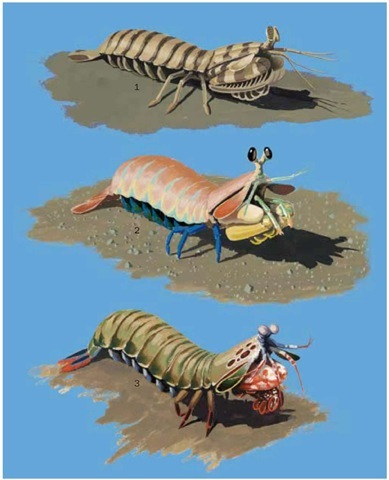

Fatos sobre o Stomatopoda
Conheça a lagosta-boxeadora
Seu nome científico é Odontodactylus scyllarus
| Reino | Filo | Subfilo | Classe | Subclasse | Ordem |
|---|---|---|---|---|---|
| Animalia | Arthropoda | Crustacea | Malacostraca | Hoplocarida | Stomatopoda - Latreille, 1817 |
Sobre
Os estomatópodes são predadores ativos que caçam presas com o auxílio de um sentido de visão muito apurado e capaz de interpretar polarização no espectro ultravioleta e infravermelho). Apresentam uma grande variação de tamanho, que pode ir de poucos milímetros até aproximadamente 40 cm nas espécies maiores. Eles vivem em fundo consolidado, lodoso ou ainda arenoso, onde cavam seus buracos ou aproveitam-se dos orifícios deixados por outros animais para neles se instalar. São animais exclusivamente carnívoros, alimentando-se de camarões, caranguejos, moluscos, peixes e até mesmo outros da mesma ordem. O segundo par de patas, muito desenvolvido, é usado tanto para atacar a presa como para se defender. O urópodo, quando aberto, também funciona para defesa, como um escudo, fechando a galeria em que o animal esteja instalado. A fêmea desova no local onde se abriga e, em caso de perigo, enrola os ovos como uma bola, prendendo-os junto ao corpo até encontrar um abrigo mais protegido.
Super visão
Nossos olhos possuem três tipos desses receptores — que respondem à luz azul, verde e vermelha —, que nos permitem perceber o espectro de cores que vemos. Os cães contam com apenas dois tipos de cones (verde e azul), e é por isso que eles vêm tons de azul, verde e um pouco de amarelo. Já as borboletas, sortudas, possuem cinco tipos de cones, o que significa que elas conseguem enxergar cores que o nosso cérebro é incapaz de processar.
Contudo, as lagostas-boxeadoras são um crustáceo tão sensacional que elas não possuem dois, três ou cinco tipos de cones apenas. Elas contam com 16! Assim, o arco-íris que elas enxergam deve ser uma verdadeira explosão termonuclear de cores, luz e beleza. Mas, como a grande maioria das criaturas, esses animais também possuem um lado obscuro. No caso das tamarutacas, esse lado é negro e sanguinário.

Pesadelo dos mares
As lagostas-boxeadoras costumam ser encontradas próximo à costa de mares tropicais e subtropicais e são predadoras letais que se alimentam de caranguejos, camarões, moluscos e peixes. Na verdade, apesar de não serem muito grandes — entre 15 e 30 centímetros —, as tamarutacas são um verdadeiro pesadelo dos oceanos, sendo consideradas como um dos animais mais violentos do planeta.